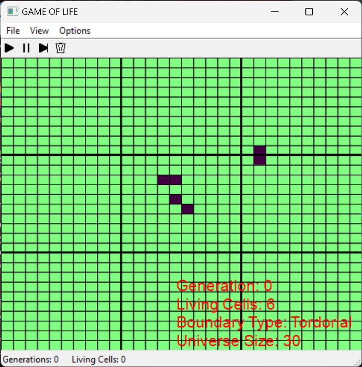
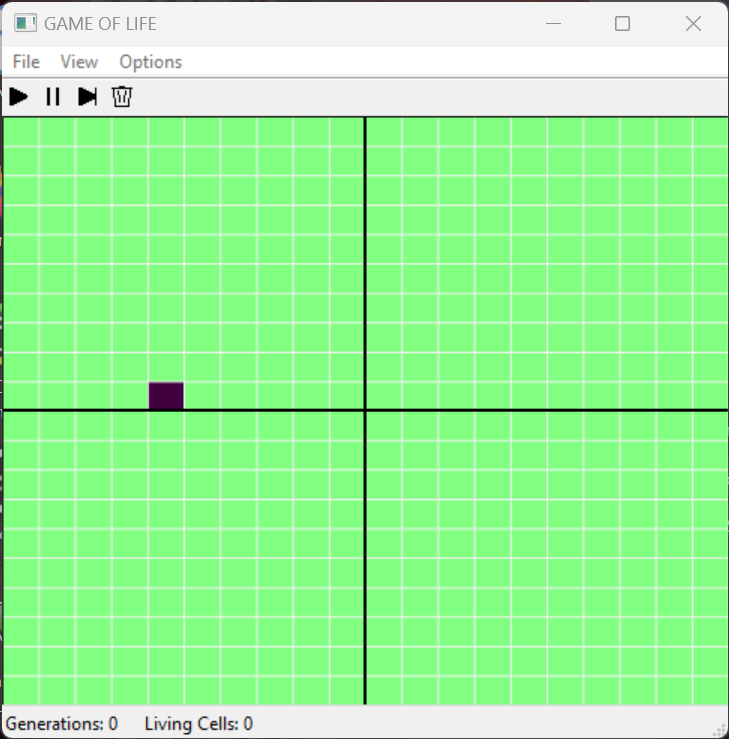
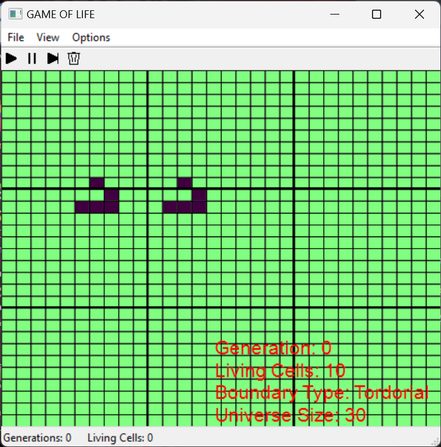
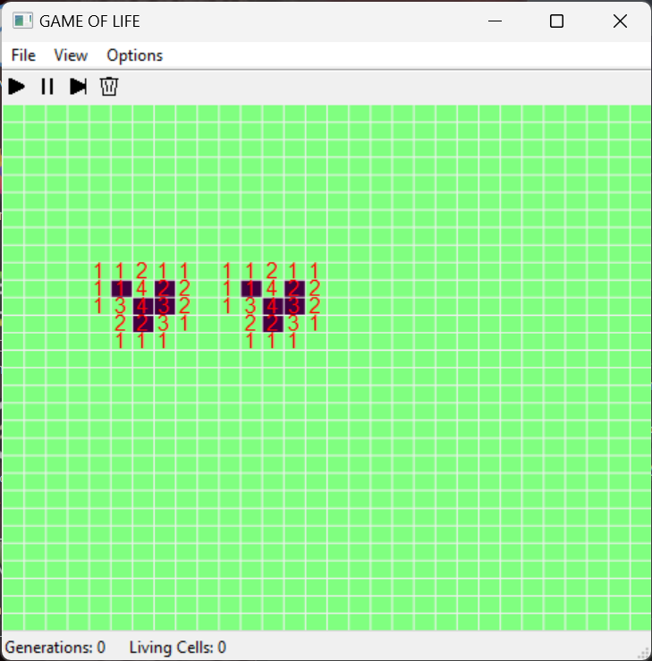

Who is Velma?
Hello! I'm a passionate software engineer with a strong foundation in C++ and Python, and experience in C#, HTML, and CSS.
My dream is to carve out a niche in the world of either Game Development, Robotics, or Possibly another field if I found the right fit.
Growing up, I was captivated by the creativity and intricate design of video games like Megaman, Link to the Past, Final Fantasy, and Chrono Trigger.
This love for games has fueled my journey into software engineering, where I strive to one day blend technical expertise with creativity.
Here, you'll find a collection of my projects showcasing my skills and dedication.
I am committed to pushing the boundaries of what's possible, and further improving my own skills.
Join me as I continue to explore, create, and find my niche.
This is where it all began. This project is a classic one, a character generator for Dungeons and Dragons.
I first built this in python back in 2021 when I started learning programming.
At the time I planned to only learn python as a hobby, but I quickly fell in love with programming.
I decided to attend school for Computer Science, and the rest was history.
I have built the console version of this application in both python and c++.
Through this application I explored a lot of the basic concepts of programming and object oriented programming.
The Python application has a GUI version that is complete, and the C++ GUI version is a work in progress.
NPC++ (The C++ Version) has a lot of source code that has yet to be fully implemented.
This source shows an understanding of Object Oriented Programming, Polymorphism, and Classes and Structs in C++.
Conway's Game Of Life (C++)




Conway’s game of life was a project that I built using the library wxWidgets for C++.
I built this in college for a class project and the source code is available upon request.
This shows a strong level of proficiency with libraries designed for GUI applications, as well as a strong understanding of the logical and mathematical principles behind the game.
The GUI functions well with a customizable size of the grid and colors of the cells.
You can toggle grid transparency and a Heads-Up Display as well.
The settings are persistent showing an understanding of Object Oriented Programming and binary file I/O.
The Linear Algebra Calculator (Python)
Developed during my time in Linear Algebra through college, I created this program to help me check my work.
This program shows a strong understanding of the underlying mathematical principles as well as the numpy, scipy, and sympy libraries for python.
This application intakes either two 3X1 vectors or two matrices of user defined sizes.
It can perform many operations such as cross products, dot products, finding the angle, adding, subtracting and more.